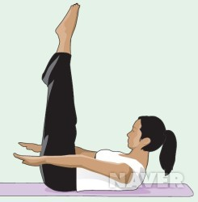

필라테스에대하여
독일에서 태어난 요제프 필라테스는 몸이 허약하여 다양한 운동을 했던 사람이었고 그는 포로수용소에 수감되기도 하였다.
그는 수용소의 좁은 공간 안에서 할 수 있는 효율적인 운동법을 개발 하였고 수용자들에게 운동법을 가르쳤다. 이 덕분에 치명적인 바이러스의 감염으로부터 수용자들을 지킬 수 있었다.
필라테스는 이후 운동법을 더욱 체계화하였고 대중들도 쉽게 적응할 수 있는 '필라테스' 운동을 만들었다.
반복된 운동과 연속동작을 통해 근육을 운동시키며 통증없이 근육을 강화할 수 있는 특징이 있다.
모든 동작에 고유의 호흡 패턴을 접목하여 운동 효과를 최대화 하고있고, 자세교정과 근력 강화로 유연성을 향상시키며 몸의 긴장을 풀어준다.
이를 통해 상해를 방지하고 재활에도 효과가 있고 심폐 능력과 순환기 능력을 강화시 키며 긴장 해소와 스트레스 감소에도 좋은 효과를 가진다.
